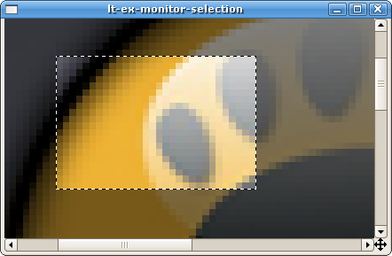
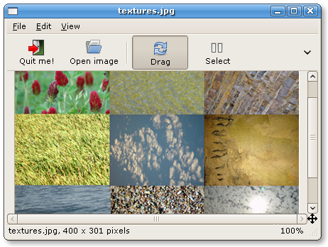

GtkImageView Reference Manual |
|---|
for GtkImageView 1.6.4
- Package overview
- Building GtkImageView — How to compile and install GtkImageView.
- Directory structure — How the package is organized.
- Source code overview — Overview of the source code.
- Release history — Major changes between versions of GtkImageView.
- Acknowledgements
- I. API reference
- GtkAnimView — Subclass of GtkImageView capable of playing GIF animations.
- GtkIImageTool — Interface for objects capable of being used as tools by GtkImageView
-
GtkImageNav — Navigation window showing a thumbnailed
overview of a GtkImageView.
 Screenshot of an active navigation window
Screenshot of an active navigation window - GtkImageScrollWin — Scrollable window suitable for GtkImageView
- GtkImageToolDragger — Default image tool for paning the image
-
GtkImageToolSelector — Image tool for selecting rectangular regions
Screenshot showing a GtkImageToolSelector with an active selection on a GtkImageView
-
GtkImageView — General purpose image viewer for Gtk+
Screenshot of the
./tests/interactivedemo application - gdkpixbufdrawcache — Cache for drawing scaled pixbufs
- gtkzooms — Functions for dealing with zoom factors